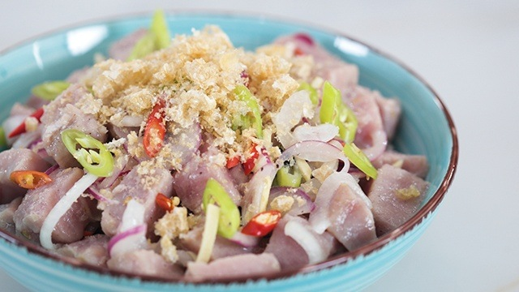

Kinilaw

Why dont you try this dish from PH?
This is very delicious dish, it is raw but cooked using vinegar
This are the List of ingredients
- 1 Kg of tuna belly
- Cucumber
- Radish
- Minced Ginger
- Vinegar
- salt
- Sugar
- Salted Black Beans
- Red Hot Chilli Minced
Steps on how to Cook
- Chop the tuna belly into blocks
- Slice the Cucumber and Radish into small pieces(pref.Round Shape)
- In a bowl, put the tuna, cucumber radish, minced ginger
- Put a sparcle of salt and sugar
- Put half cup of vinegar
- Put the chilli(It depends on your capacity to handle)
- mix slowly